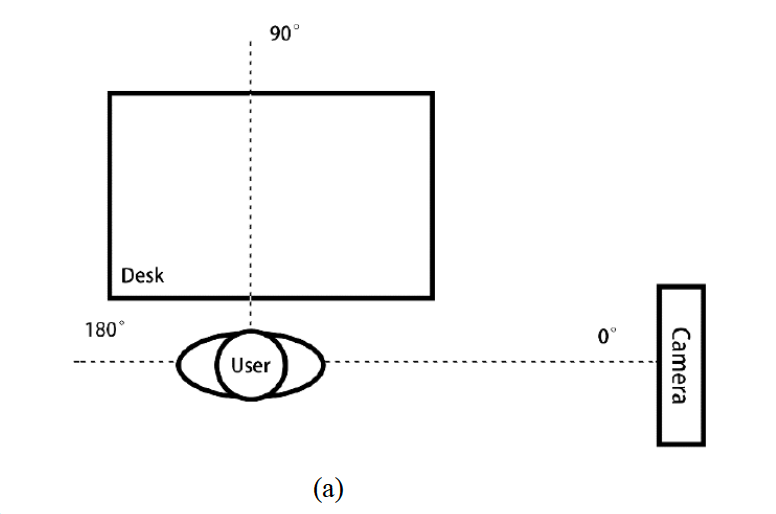
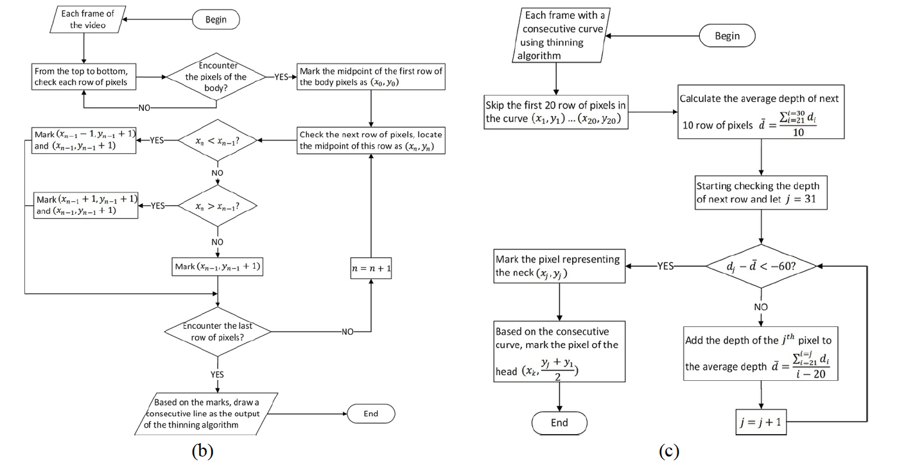
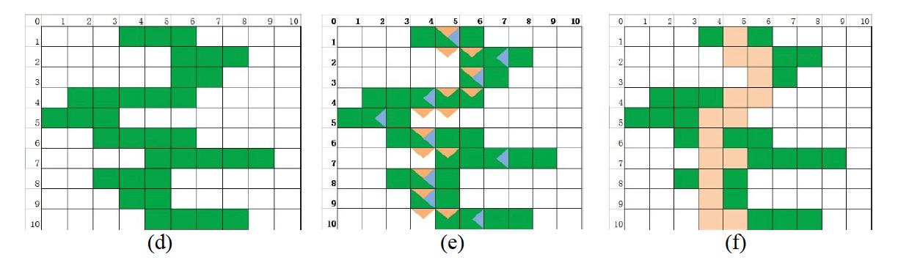
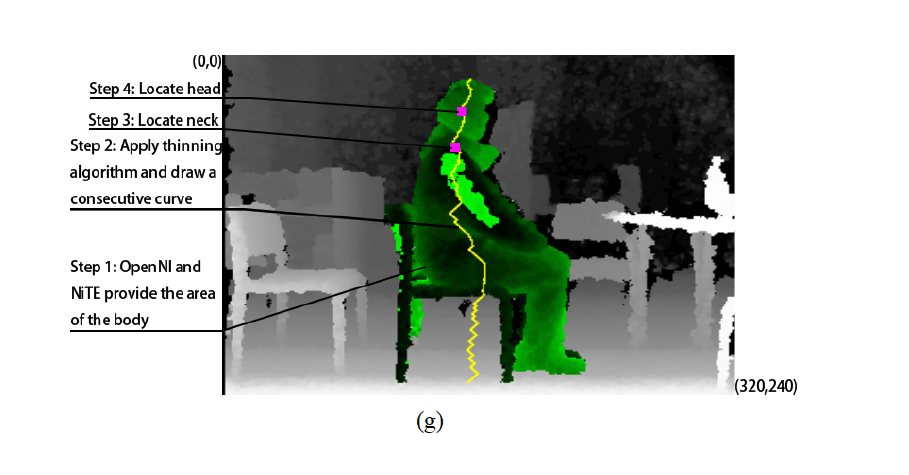
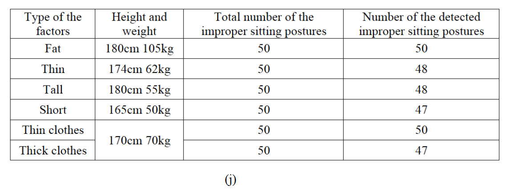
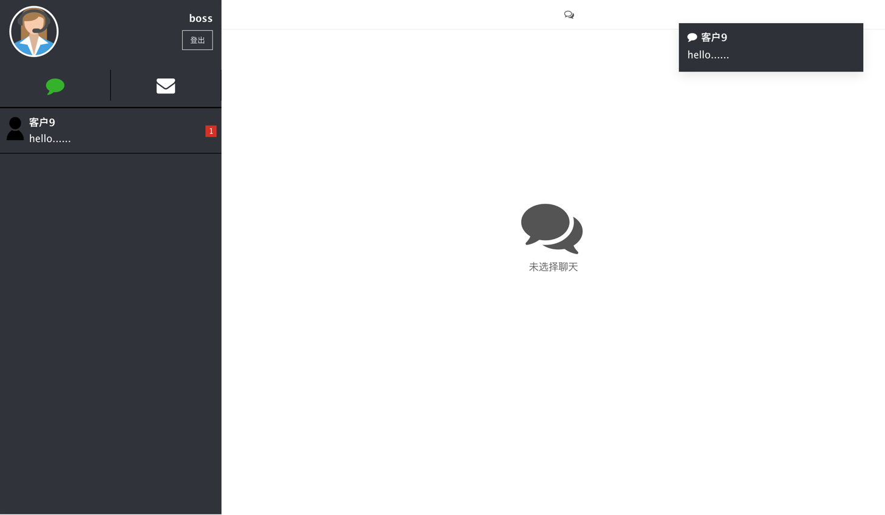

let's work together projects and just send me email here
Flowergraphy
Flower Classification System Based on Deep Learning
Flowergraph is a website which can recognize 30 kinds of flower pictures which users
upload. I retrained Inception v4 Convolutional Neural Networks in TF-slim framework.
The main method to retrain the model is transfer learning. The accuracy of
classification was 93.25% using 10-fold cross validation.
Career Planning Assistant Based on Big Data Sample
This system can Recommend suitable career planning to users.It recommend what skills
users should learn,
According to user's background, we give them a total score and predict the salary for
them in the next few years.
Meanwhile we recommend some excellent people who have similar background with them.
Detection and Alerting System of Sitting Posture Based on 3D Body Sensing Camera
Sitting posture detection is helpful for preventing musculoskeletal
disorders.
With the development of motion-sensing camera and relative software development
kit(SDK),
it is possible to implement an application using skeleton detecting technology.
In this project, we excoriated Skeleton thinning algorithm and Averaging process to
detect sitting posture from a lateral view without disturbing the user.
The results show this method has high accuracy when detecting improper sitting
postures.
This detecting improper sitting posture method is based on:
A motion-sensing camera
Software development kit - OpenNI and NiTE
Portable Ergonomic Observation(PEO) model
Contribution
Detect from the lateral side of the user
Use a skeleton thinning algorithm
Apply a threshold to distinguish the posture
Experiment Setup

Picture (a) shows we detect from the lateral side of the user.
One of the advantage of this setup is the view of camera would not be blocked by the desk.
Skeleton Thinning Algorithm
Steps of reducing area of body to a consecutive curve:
1. Check all of the pixels in each frame row by row;
2. Mark middle pixels of each row;
3. Calculate the related middle pixel according to previous row;
4. Mark all related middle pixels and get the result.

Picture (b) shows the flow chart of the skeleton thinning algorithm
Purpose: Reduce the area of body to a consecutive curve
Picture (c) shows the flow chart of the averaging process
Purpose: Locate the position of head and neck
Example of the skeleton thinning algorithm

1. Mark the body pixels as green color, like (d);
2. Mark middle pixels as blue triangles, like (e);
3. Calculate and mark related middle pixels as orange triangles, like (e);
4. Connect all orange triangles to get a consecutive curve like (f).

Picture (g) shows the 4 basic steps of sitting posture detection.
Picture (h) shows the trends of raw depth and depth after averaging process.
Picture (i) shows the trends of raw depth difference and depth difference after the
averaging process.
And we can see that there is no abrupt change in raw depth difference. The abrupt change
happens in the 53th-68th pixel, where the depth is less than -40. Combining with
observation, -60 is chosen as an abrupt change, which means the 57th pixel is
approximate neck.
Then choose the middlepoint between neck and the first pixel on the consecutive curve to
identify the position of head. The midpoint is also on the curve.
The number of pixels skipped and averaged is based on the distance between camera and
user and the effect of detection.
Thus the first 20 pixels are skipped.
Test Results of Different Factors

In order to find whether factors like body shape and clothes affect the accuracy of the
detection,
five volunteers repeated making improper sitting posture for 50 times, the results are
shown in table (j).
An online bookstore based on SSH (Struts/Spring/Hibernate) framework which contains
functions including logging in,
purchasing books online, managing the information of users and so on.
Online Customer Service System for Chinese Southern Airlines

This project is to develop an Online Customer Service System for Chinese Southern
Airlines by
applying Websocket to the communication between server side and client side.